Krzywe Bézier w robotyce
Kacper Drążyk
Czym są krzywe Bézier
\[\begin{cases} x = f_1(t)\\ y = f_2(t)\\ z = f_3(t)\\t \in [0,1] \end{cases} \]
Historia
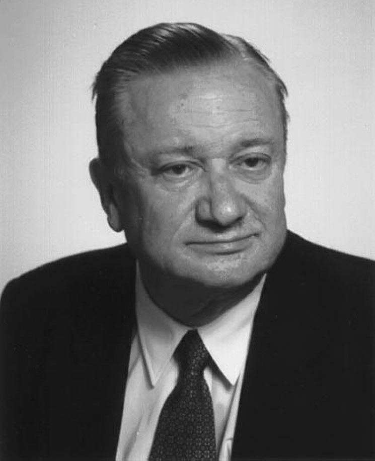
Paul de Casteljau
Pierre Bézier
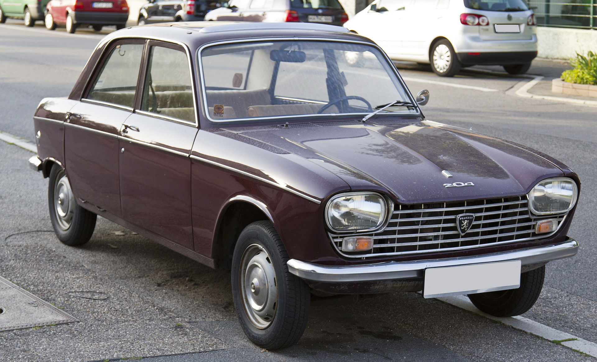
Peugeot 204
Gdzie są stosowane?
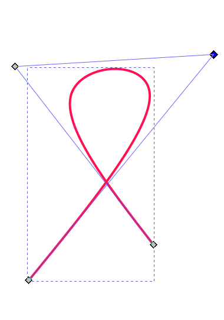
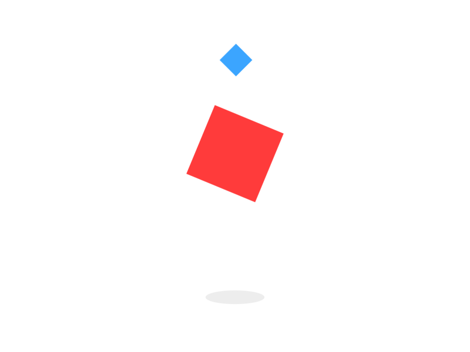
Planowanie trajektorii
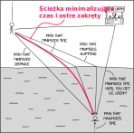
Point to point
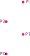
- interpolacja liniowa pomiędzy punktami
- konieczne zatrzymanie w każdym punkcie
- małe wymagania obliczeniowe
Corner smoothing
- łagodniejsze zmiany kierunku
- nie każdy punkt jest osiągany
- większe wymagania obliczeniowe
Krzywe Bézier
- dowolna płynność ruchu
- punkty mogą być osiągane
- największe wymagania obliczeniowe
Opis matematyczny

Interpolacja liniowa
\[\displaystyle \mathbf {P} (t)=(1-t)\mathbf {P} _{0}+t\mathbf {P} _{1},\ 0\leq t\leq 1\]
Algorytm de Casteljau
Krzywa Bézier II rzędu
Krzywa Bézier III rzędu
Krzywa Bézier XII rzędu
Równanie opisaujące krzywą III rzędu
\[\displaystyle \mathbf {B} (t)=(1-t)^{3}\mathbf {P} _{0}+3(1-t)^{2}t\mathbf {P} _{1}+3(1-t)t^{2}\mathbf {P} _{2}+t^{3}\mathbf {P} _{3},\ 0\leq t\leq 1\]
\[\mathbf B(t) = \begin{bmatrix} 1 & t & t^2 & t^3 \end{bmatrix} \cdot \begin{bmatrix} 1 & 0 & 0 & 0\\-3 & 3 & 0 & 0\\3 & -6 & 3 & 0\\-1 & 3 & -3 & 1\\ \end{bmatrix} \cdot \begin{bmatrix} P_0 \\ P_1 \\ P_2 \\ P_3 \end{bmatrix}\]
Wielomiany Bernsteina
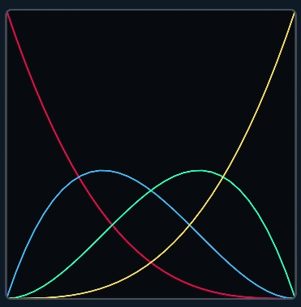
\[\begin{split} B(t) = \,& P_0 \cdot (-t^3 + 3t^2 -3t +1) + \\& P_1 \cdot (3t^3 - 6t^2 + 3t) +\\& P_3 \cdot (-3t^3 +3t^2) +\\&P_3 \cdot (t^3) \end{split} \]
Zakres oddziaływań punktów
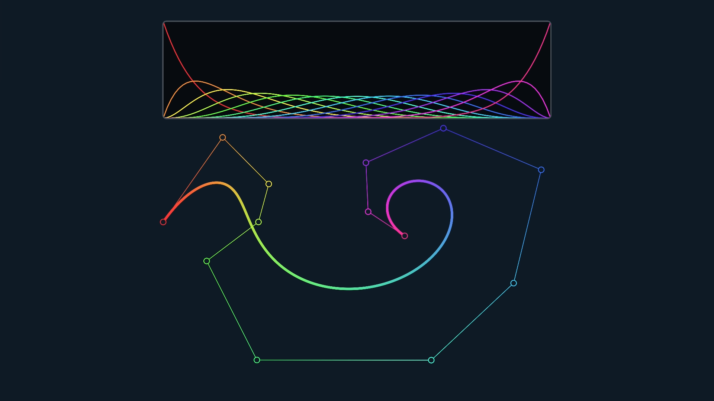
Krzywe Bézier nie umożliwiają kontroli lokalnej
Spline - funkcja sklejana
Ciągłość
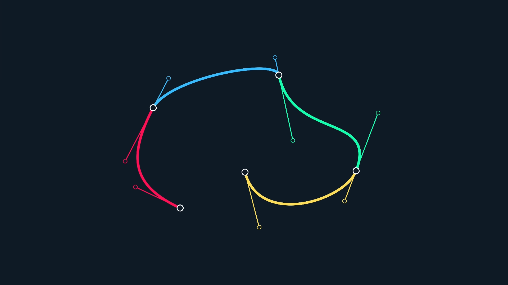
\[\mathbf B(t) = \begin{bmatrix} 1 & t & t^2 & t^3 \end{bmatrix} \cdot \begin{bmatrix} 1 & 0 & 0 & 0\\-3 & 3 & 0 & 0\\3 & -6 & 3 & 0\\-1 & 3 & -3 & 1\\ \end{bmatrix} \cdot \begin{bmatrix} P_0 \\ P_1 \\ P_2 \\ P_3 \end{bmatrix}\]
\[ \frac{d}{dt} \mathbf B(t) = \begin{bmatrix} 0 & 1 & 2t & 3t^2 \end{bmatrix} \cdot \begin{bmatrix} 1 & 0 & 0 & 0\\-3 & 3 & 0 & 0\\3 & -6 & 3 & 0\\-1 & 3 & -3 & 1\\ \end{bmatrix} \cdot \begin{bmatrix} P_0 \\ P_1 \\ P_2 \\ P_3 \end{bmatrix}\]
\[ \frac{d^2}{dt^2} \mathbf B(t) = \begin{bmatrix} 0 & 0 & 2 & 6t \end{bmatrix} \cdot \begin{bmatrix} 1 & 0 & 0 & 0\\-3 & 3 & 0 & 0\\3 & -6 & 3 & 0\\-1 & 3 & -3 & 1\\ \end{bmatrix} \cdot \begin{bmatrix} P_0 \\ P_1 \\ P_2 \\ P_3 \end{bmatrix}\]
C1 - prędkość
C2 - przyspieszenie
Inne opcje
Badania naukowe
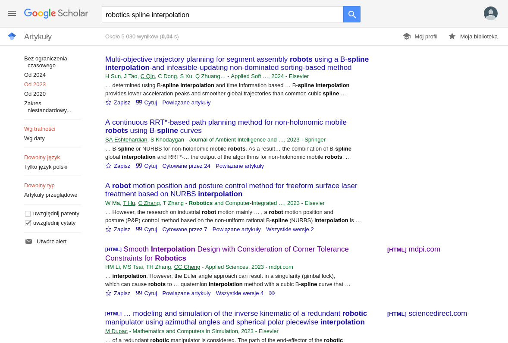
Aplikacja
https://kdrazyk.github.io/ → Aplikacja
Dziękuję za uwagę
Najważniejszy wniosek:
Płynniejsze trajektorie ograniczają drgania i zużycie części, a przez zwiększają wydajność oraz dokładność robotów.
Bibliografia
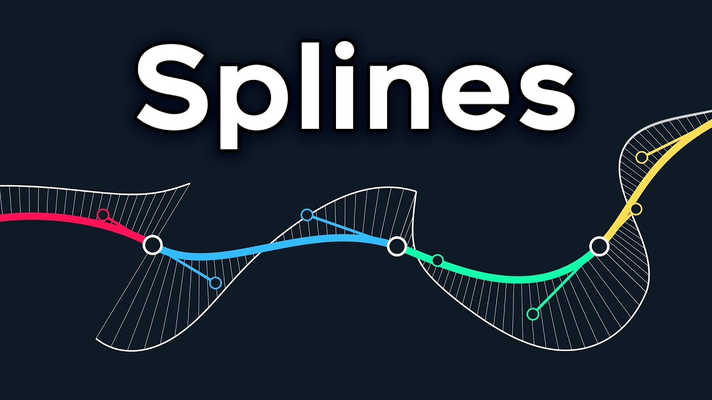
Freya Holmér